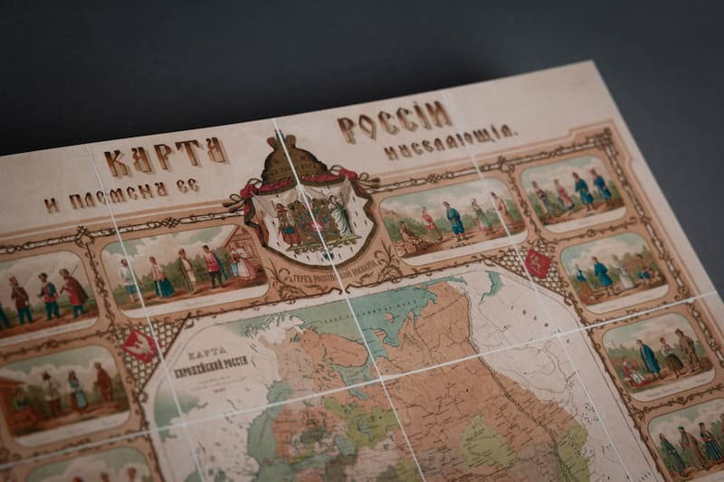
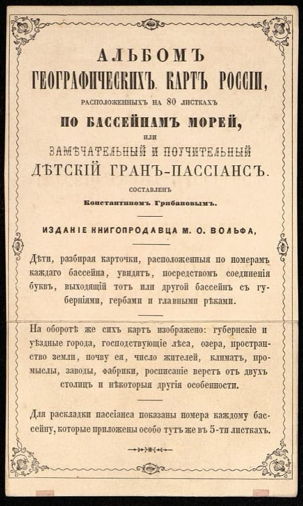
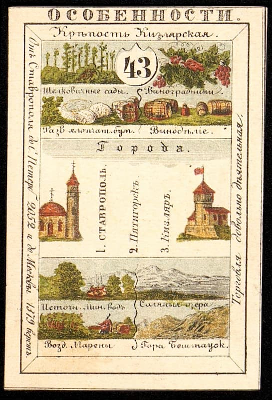
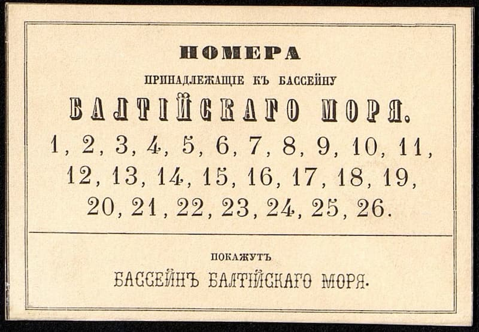
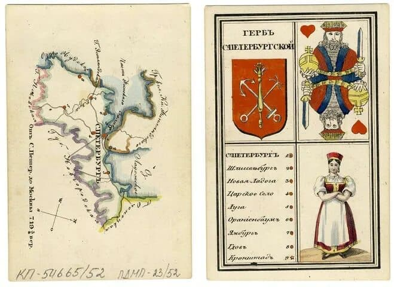

В первой половине XIX века Российская империя активно расширяла свои границы, охватывая территории от Балтийского моря до Тихого океана. В состав государства вошли новые земли: Финляндия, Польша, Бессарабия, Кавказ, Закавказье, Казахстан, Приамурье и Приморье. Это время характеризовалось не только территориальным ростом, но и повышенным интересом к этнографическому разнообразию присоединённых земель.

Именно в этот период, в 1830–1850-х годах, появился необычный образовательный продукт — игра «Географические карты России», созданная художником и гравером Константином Матвеевичем Грибановым. Это было не просто развлечение, а инновационное учебное пособие, объединившее элементы игры и научные знания того времени.

Константин Грибанов родился в 1797 году. После окончания Воспитательного училища Императорской Академии художеств в 1817 году он поступил на службу в Министерство финансов в качестве товарного ревизора. Именно во время работы в министерстве в 1821 году Грибанов создал свой знаменитый набор карт.

Образовательный набор включал 80 карточек, представляющих административно-территориальные единицы империи: 70 губерний и 10 особых регионов. Каждая карта содержала обширную информацию: географические описания, статистические данные, расстояния до столичных городов. Вместо традиционных карточных мастей и очков на них размещались сведения о населении, экономике и природных особенностях регионов.

Дизайн карт был продуман до мелочей. На лицевой стороне указывались крупнейшие населённые пункты, год основания губернского центра, развитые отрасли промышленности. Оборотная сторона содержала герб региона, этническую карту, климатические данные и географические особенности. Особое место занимали изображения жителей губернии в национальных костюмах, которые Грибанов создавал на основе этнографических зарисовок и книги Георги «Описание всех обитающих в Российском государстве народов».

Интересно сравнить подход Грибанова к изображению национальных костюмов с музейными стандартами того времени. Если художник позволял себе творческие вольности в интерпретации народного костюма, то музейные коллекции формировались на основе строгой хронологии и документальных материалов, что отражало разные подходы к сохранению культурного наследия.
В современном мире подобные образовательные проекты также могут найти своё воплощение благодаря передовым технологиям печати. Типография «Лазурь» располагает современным оборудованием для изготовления высококачественных карт, которое позволяет воспроизводить сложные детали и яркие цвета, сохраняя историческую достоверность и образовательную ценность подобных проектов.
Таким образом, карты Грибанова стали не просто образовательным пособием, но и важным историческим документом, отражающим этнографическое и географическое разнообразие Российской империи первой половины XIX века.